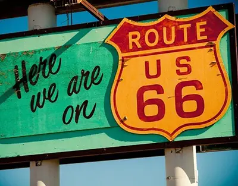
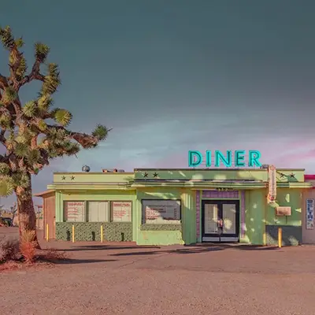
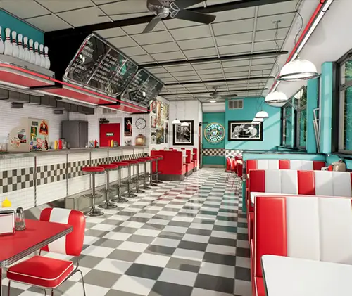
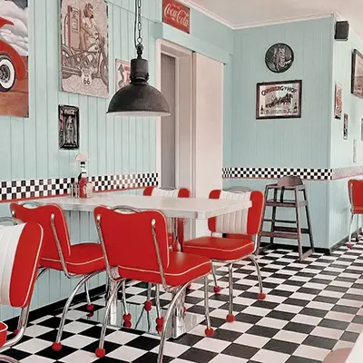
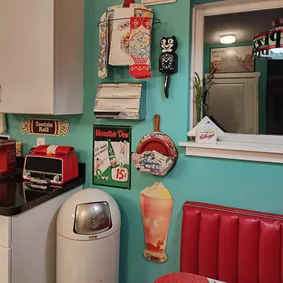
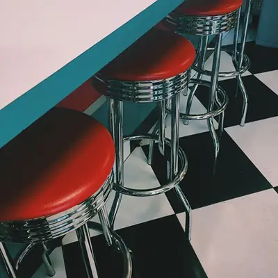
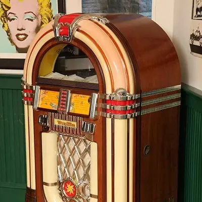
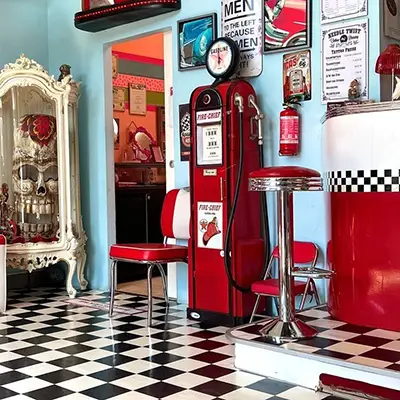

Gallery
Take a look around Ruby's before you even walk through the door. From the neon sign out on the highway to the checkerboard floors and chrome stools inside, here's a peek at the 1950s charm waiting for you at Ruby's Route 66.
-

Route 66 -

Exterior of Ruby's Route 66 -

The main dining room -

Counter seating and neon overhead -

Vintage decor around every corner -

Classic chrome counter stools -

The diner's ol' trusted jukebox -

A little roadside history on display